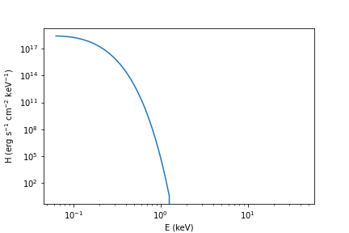
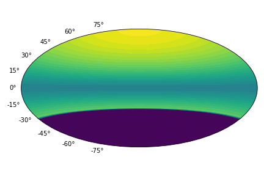

Simple example¶
All examples are available in examples folder.
In order to work with the package we recommend to import
the following blocks and packages:
from magpies import *
from atmos import *
import numpy as np
from math import *
First we specify mass and radius of neutron star. These parameters will enter nearly every function because they enter the compactness parameter and affect how light is emitted and propagated in close vicinity of the neutron star. Following the usual practise of the field mass is specified in units of solar mass and radius is in km. It is also useful to choose polar magnetic field Bp [G] and temperature in deep layers of neutron stars Tb [K].
# Radius and mass of neutron star
Rns = 12 ## km
Mns = 1.4 ## M_solar
Tb = pow(10, 7.1730) ## K
Bp = 1e11 ## G
Now we compute free fall acceleration and initialise the iron atmosphere following fit from Potekhin et al. (2003) article for dipolar magnetic field.
g14c = g14 (Rns, Mns) ## computing the free fall acceleration
atm_iron_2003 = NS_atmosphere ('Potekhin_2003_iron', g14c, Tb, Bp)
atm_iron_2003.describe ()
The function g14() is a part of Magpies library while NS_atmosphere() is a class
from the Atmos library. The method describe() simply provide more details
about the fit and relevant literature reference.
Further we create a latitude and longitude grid where the temperatures are computed.
theta = np.linspace (0, pi, 100) ## theta coordinates
phi = np.linspace (0, 2*pi, 99) ## phi coordinates
theta1, phi1 = np.meshgrid (theta, phi)
Ts = atm_iron_2003.Ts (theta1)
The method Ts() creates array with temperatures following
the prescribed compactness and deep crust temperature. We can plot the surface
thermal map in Aitoff projection using standard matplotlib tools:
import matplotlib.pyplot as plt
frame = plt.subplot(111, projection='aitoff')
bc = plt.contourf (phi-pi, -(theta-pi/2), Ts.T, 40)
frame.axes.xaxis.set_ticklabels([])
plt.tight_layout()
We normally transpose the temperature array using numpy method .T. The result
is shown below.
Now when the surface thermal map is prepared we can try different functions from the Magpies package. For example the package has basic functionality which allows fast calculations of total thermal luminosity and effective temperature
L = compute_L(theta, phi, Rns, Ts)
Teff = compute_Teff(theta, phi, Rns, Ts)
print ('L = ', L, ' Teff = ', Teff)
This function gives \(L = 6.7\times 10^{30}\) erg/s and \(T_\mathrm{eff} = 2.8\times 10^5\) K. Advanced methods available in Magpies package allows to compute the spectra:
eph, spect, visib = get_redshifted_spectra_pole_3D(theta, phi, Ts, Rns, Mns)
Here eph is list of energies where the spectra is computed, spect is the
effective spectral flux and visib shows the temperature distribution over the
visible hemisphere. We can plot the resulting spectra as the following:
plt.plot (eph, spect)
plt.xlabel('E (keV)')
plt.ylabel(r'H (erg s$^{-1}$ cm$^{-2}$ keV$^{-1}$)')
plt.xscale('log')
plt.yscale('log')
Which gives us the following plot.
The visible map looks like the following:
It is possible to create a lightcurve.
phases = np.linspace (0, 4*pi, 400)
intens = lightcurve (theta, phi, Ts, Rns, Mns, phases, 0, pi/4)
intens_rel = np.asarray(intens) / np.mean(intens)
plt.plot (phases, intens_rel)
plt.xlabel(r'$\Phi$')
plt.ylabel('Relative intensity')